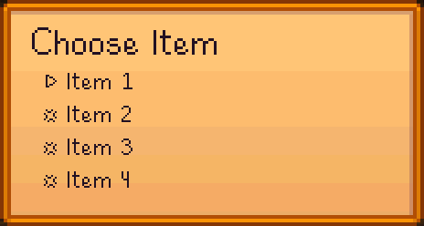
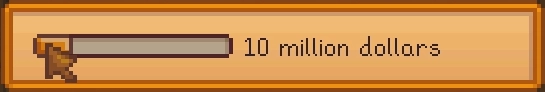

Standard Views
Layouts
Frame
Applies decorations and alignment to an inner view.
Frames are very similar to panels, but support customizable backgrounds, borders and shadows, and only allow a single content view. Use them for menu borders, group boxes, item placeholders, and anywhere else that content needs to stand out or be visually divided from other content.

<frame layout="400px 200px"
background={@Mods/StardewUI/Sprites/MenuBackground}
border={@Mods/StardewUI/Sprites/MenuBorder}
border-thickness="36, 36, 40, 36"
horizontal-content-alignment="middle"
vertical-content-alignment="middle"
padding="32,16,32,24">
<label font="dialogue" text="Frame Content" />
</frame>
Grid
Lays out items as a uniform grid (AKA table), where "uniform" means that each "cell" has the same size. Can be oriented either horizontally (ordered left-to-right, then wrapping to the next row) or vertically (ordered top-to-bottom, then wrapping to the next column).
Choose from either type of item-layout:
- Fixed length (
length: nn), where the width (or height, in vertical orientation) is constant and the grid wraps whenever it reaches the end of the row; or - Fixed count (
count: nn), where the number of items per row (or column, in vertical orientation) is constant and the grid automatically adjusts their size to fit.
Note
Grids must have a size independent of their content in the direction of their orientation; i.e. a grid with horizontal orientation must have a width other than content, and a grid with vertical orientation must have a height other than content.
While it might seem logical to combine item-layout="count: n" with a fixed-size child layout such as <image layout="64px 64px" /> in order to create a dynamically-sized grid, this isn't how it works in practice; the size of a grid cell can only be determined based on the grid's own properties, not the content inside it. If you expect to have a variable number of rows/columns and a variable width/height, use nested Lanes instead.

void ShowGridExample()
{
Game1.activeClickableMenu = viewEngine.CreateMenuFromAsset(
$"Mods/focustense.StardewUITest/Views/GridTestView",
EdiblesViewModel.LoadFromGameData());
}
Note: For the source of EdiblesViewModel, see the Scrolling Item Grid example.
Lane
Lays out items in a straight line, either horizontally or vertically.
Can align items to any edge, and supports dynamically sized items; e.g. if an item with stretch length is placed in a lane with other, fixed-length items, then the stretch item will resize to whatever width is left over.
Lanes are the bread and butter of content layout; almost any UI design can be represented as some combination of horizontal and vertical lanes.

partial class LaneTestItem(string name) : INotifyPropertyChanged
{
public string Text => $"{IsSelected ? '>' : '*'} {name}";
[Notify] private bool isSelected;
}
class LaneTestViewModel()
{
public List<LaneTestItem> Items { get; set; } = [
new("Item1") { IsSelected = true },
new("Item2"),
new("Item3"),
new("Item4"),
];
}
void ShowLaneExample()
{
Game1.activeClickableMenu = viewEngine.CreateMenuFromAsset(
$"Mods/focustense.StardewUITest/Views/LaneTestView",
new LaneTestViewModel());
}
Panel
Lays out and draws multiple items in the same space, in a back-to-front order.
Panels are similar to frames, but instead of decoration, their main purpose is intentional overlap—for example, drawing some text or a small icon on top of another image.
All children are given the same bounding rectangle for layout, and can be "positioned" using alignment and margins. By default, the order that the children are added is the order in which they will be drawn, i.e. the last element will be drawn over top of any previous elements, but this can be overridden by adding a z-index attribute to one or more elements.

<panel layout="64px" vertical-content-alignment="end">
<image layout="stretch" margin="4" sprite={ItemData} />
<lane vertical-content-alignment="end">
<image layout="24px" sprite={Quality} />
<spacer layout="stretch 0px" />
<digits number={Count} />
</lane>
</panel>
Note
Binding the image's sprite to an ItemQuality enum requires a custom converter.
enum ItemQuality { Silver, Gold, Iridium }
class PanelTestViewModel
{
public ParsedItemData ItemData { get; set; }
public ItemQuality Quality { get; set; }
public int Count { get; set; }
}
void ShowPanelExample()
{
Game1.activeClickableMenu = viewEngine.CreateMenuFromAsset(
$"Mods/focustense.StardewUITest/Views/PanelTestView",
new PanelTestViewModel()
{
ItemData = ItemRegistry.GetData("(O)266"), // Pizza
Quality = ItemQuality.Iridium,
Count = 39
});
}
Scrollable View
A rectangular area that can be scrolled to show off-screen content. Combines both the scrollable container, which holds the element's children, and the scrollbar itself, which is automatically synchronized with the content and shown/hidden when necessary.
Scrollable views can be used to hold simple lists, grids, or an entire complex UI with many different widgets such as a configuration menu. All scrolling behavior such as the mouse wheel and gamepad's right stick movement are built in, and the container will scroll automatically when elements inside the container are focusable.
Tip
To improve discoverability, set a peeking value large enough so that the user can always see whether there is more content to scroll through.

class ScrollableTestViewModel(int count)
{
public IReadOnlyList<string> Items { get; } =
Enumerable.Range(0, count).Select(i => $"Item {i + 1}").ToArray();
}
void ShowScrollableExample()
{
Game1.activeClickableMenu = viewEngine.CreateMenuFromAsset(
$"Mods/focustense.StardewUITest/Views/ScrollableTestView",
new ScrollableTestViewModel(100));
}
Content
Banner
Displays banner-style text.
This is most often used for "scroll text" as shown in the example below. However, the background is optional, and customizable; the real function of this widget is to draw text with the special "title font", which is not available as a normal SpriteFont and therefore cannot be used with labels.
In addition to being used with backgrounds as menu titles, banners are also commonly used without backgrounds as section headings in longer vertical menus.

Image
Draws a Sprite. Functionally very similar to interacting with the SpriteBatch, but significantly more streamlined for use in UI layouts:
- Built-in 9-slice scaling; simply set the edge lengths on the input sprite.
- Has multiple fit options; choose whether the image should be scaled uniformly to fit inside the layout area (letterboxing or pillarboxing), covering the layout area (clipping) or stretched non-uniformly across the area.
- Shadows, tint, alignment, uniform rotation and other quality-of-life features.
Static images are usually bound to some sprite asset, as shown in the example below. For dynamic images, several common implicit conversions are available.

Label
Draws text as a single line or paragraph.
Existing newlines are preserved, and all measurements (e.g. breaking) are handled as part of the layout; the text can be limited in length using max-lines, or can be given unlimited length and placed inside a content-sized container or scrollable.
The font will accept any SpriteFont if you have a custom font, otherwise the built-in game values are small (default), dialogue (large) and tiny (not actually tiny, but the game calls it tinyFont). MonoGame does not support font sizes per font, but this can be simulated via scale, which also applies to layout—i.e. will affect how much space is occupied by the label and/or how many lines can be displayed.
Aside from banners, the label element should be all that the majority of UIs ever need for text.

class LabelTestViewModel
{
public string Text { get; set; }
}
void ShowLabelExample()
{
Game1.activeClickableMenu = viewEngine.CreateMenuFromAsset(
$"Mods/focustense.StardewUITest/Views/LabelTestView",
new LabelTestViewModel()
{
Text = "Out in the kitchen. That skillet good and greasy John Henry "
+ "has been the ruin of me, the buggies and the hacks all "
+ "formed in line steel driving crew weevil cold wind blows "
+ "constant sorrow, turkey in the straw, five dollars one arm "
+ "round my whiskey keg sun would never shine when I was a "
+ "little boy aces backed with eights, wheel hoss baby on her "
+ "knee handsome stranger Jack-a-Diamonds out in the kitchen."
});
}
(Filler text generated from Hillbilly Ipsum)
Spacer
Adds space between other elements. Has no visual appearance on its own.
The most common usage of this is to align elements to opposite edges of a layout view such as a Lane. For example, a title-bar-like control normally has title text and optional icon on the left side, and actions on the right side.
Alignment cannot be specified on individual elements, since only layout views control layout. One way to handle separate alignments would be to use a panel with additional panels, lanes, etc. as children, each aligning to a different edge. However, for cases where overlap is not required or expected, it is simpler and quicker to add a spacer with one of its dimensions set to stretch.

Spacers can also be fixed-width and/or fixed-height; there is no requirement for stretch, it is only the most common usage.
Tiny Number Label
Called <digits> in StarML for conciseness, but originally named after the utility function drawTinyDigits in Stardew Valley. Displays numbers, and only numbers, using sprites that are much smaller than built-in label fonts will generally allow. Typically shown on top of an item to indicate the quantity or stack size.

Interactivity
Button
Your basic clickable button. Supports an optional alternate hover background and shadow, although the vanilla game generally does not do this for its own buttons.
Most buttons are text buttons, and can be set up easily with just the text attribute. However, you can also customize what is inside the button, similar to a frame, by removing the text attribute and adding a child element instead. Both examples are shown below.


Checkbox
An image that can be toggled between two states (generally, on or off) by clicking on it. The image is customizable; default sprites are used in the example below.
Includes a label-text property that adds text next to the image; importantly, the text can also be clicked to toggle the option, which improves usability by providing a much larger target in which the click can land.

Tip
Don't forget to use a two-way binding or output binding in order to receive the value of is-checked in your model; this is much simpler and more efficient than using the click event.
Drop-Down List
Provides a drop-down (AKA pull-down) menu to select from a list of options.
These are better-behaved than the vanilla drop-down lists in Stardew Valley; they follow the standard drop-down design of click to open, and click again to select/close, and gamepad cursors automatically move to the selected option when the list is opened and back to the toggle button when the list is closed.
It is usually a good idea to set option-min-width so that the selection box does not change size depending on the length of the selected item.

enum WeaponType { Sword, Club, Dagger, Slingshot, Special }
partial class DropDownTestViewModel : INotifyPropertyChanged
{
public Func<WeaponType, string> Format { get; } = wt => wt switch
{
WeaponType.Sword => "Slashy",
WeaponType.Club => "Smashy",
WeaponType.Dagger => "Stabby",
WeaponType.Slingshot => "Stretchy",
_ => "Banana"
};
public IReadOnlyList<WeaponType> Weapons { get; } =
Enum.GetValues<WeaponType>();
[Notify] private WeaponType selectedWeapon;
}
void ShowDropDownExample()
{
Game1.activeClickableMenu = viewEngine.CreateMenuFromAsset(
$"Mods/focustense.StardewUITest/Views/DropDownTestView",
new DropDownTestViewModel());
}
Option Types
Drop-down lists in StarML use a special, dynamically-typed wrapper over the generic DropDownList which enables it to adjust to any option type; the example above defines a completely new option named WeaponType.
In order for this to work, all option-related properties must use the same type. These properties are the ones shown above: options, option-format and selected-option. Any type can be used for all three, as long as the entire view model is consistent.
Expander
An expandable panel with built-in behavior to toggle expand/collapse on click. The header is always visible, while the content is only visible when expanded.
Includes its own (customizable) caret sprite to show the current expanded state.

<frame layout="420px 380px"
background={@Mods/StardewUI/Sprites/ControlBorder}
padding="32,16,32,24">
<lane layout="stretch content" orientation="vertical">
<expander layout="stretch content"
margin="0,0,0,4"
header-padding="0,12"
header-background-tint="#99c"
is-expanded={<>IsExpanded}>
<label *outlet="header" text={HeaderText} />
<image layout="stretch 300px"
horizontal-alignment="middle"
sprite={@Mods/focustense.StardewUITest/Sprites/Cursors:Balloon} />
</expander>
<label text="Additional content below expander" />
</lane>
</frame>
partial class ExpanderTestViewModel : INotifyPropertyChanged
{
public string HeaderText => IsExpanded ? "Hide Details" : "Show Details";
[Notify] private bool isExpanded;
}
void ShowExpanderExample()
{
Game1.activeClickableMenu = viewEngine.CreateMenuFromAsset(
$"Mods/focustense.StardewUITest/Views/ExpanderTestView",
new ExpanderTestViewModel());
}
Keybind
Displays the current, non-editable value of a single SMAPI Keybind.
Requires a sprite-map in order to display correctly. The shipped version of StardewUI includes a built-in map asset, shown below; it can either be used without any arguments (i.e. ending in /Buttons) or with an argument list in the following format:
keyboardTheme-mouseTheme-sliceScale.
Valid values for either theme are dark, light, stardew (orange) or default which behaves the same as stardew. Controller buttons are always shown in a dark style.
For sliceScale, smaller numbers make the border edges thinner; for a button-height of 64px, a scale of 0.5 is typically good. Adjust to preference; typically, the smaller the button is, the smaller the ideal scale should be.

class KeybindTestViewModel
{
public Keybind Hotkey { get; set; } =
new(SButton.LeftStick, SButton.ControllerA);
}
void ShowKeybindExample()
{
Game1.activeClickableMenu = viewEngine.CreateMenuFromAsset(
$"Mods/focustense.StardewUITest/Views/KeybindTestView",
new KeybindTestViewModel());
}
Note: The example image shows two appearances, one for keyboard bindings and one for controllers. The example code will only produce one, but both images are produced from the exact same view, populated with different keybind values.
Keybind Editor
An editable version of the keybind view supporting the same options, except taking a keybind-list instead of a keybind for adding multiple bindings. Includes built-in overlay to capture input when adding/changing a binding.
Although it is designed to work with multiple keybindings (SMAPI KeybindList), the behavior can be adjusted to work with only a single keybinding or even a single button, by changing the editable-type property (see KeybindType for details). If no editable-type is specified, the binding cannot be edited. When the value is MultipleKeybinds, as shown below, the overlay includes an "add" button whose text can be customized with the add-button-text attribute.

partial class KeybindListTestViewModel : INotifyPropertyChanged
{
[Notify]
private KeybindList keybinds = new(
new Keybind(SButton.LeftControl, SButton.F5),
new Keybind(SButton.LeftStick, SButton.ControllerA));
}
void ShowKeybindEditorExample()
{
Game1.activeClickableMenu = viewEngine.CreateMenuFromAsset(
$"Mods/focustense.StardewUITest/Views/KeybindEditorTestView",
new KeybindListTestViewModel());
}
Slider
A draggable thumb inside a fixed-width track, ideal for editing numeric values.
All sliders are float based, but can be given the visual appearance of an integer slider by setting interval to a whole number. Use the min and max attributes to control the range, and value-format to customize how the label next to the track/thumb appears.
Controller-based editing simply requires pressing the d-pad or left stick while the slider is focused.

partial class SliderTestViewModel : INotifyPropertyChanged
{
public Func<float, string> Format { get; } =
value => $"{value} million dollars";
[Notify] private float money = 10;
}
void ShowSliderExample()
{
Game1.activeClickableMenu = viewEngine.CreateMenuFromAsset(
$"Mods/focustense.StardewUITest/Views/SliderTestView",
new SliderTestViewModel());
}
Tab
A rectangular content frame with rounded top, which shifts its position slightly to indicate whether or not it is active.
Generally used as part of a tab group where only one tab can be active at a time.
In addition to supporting data binding on the active state, the tab automatically activates or "presses" on click, and raises events on activation and deactivation.
When using the default sprite, the background will stretch and any inner content (i.e. whether text or image) can generally be represented.

partial class TabData(string name, Texture2D texture, Rectangle sourceRect)
: INotifyPropertyChanged
{
public string Name { get; } = name;
public Tuple<Texture2D, Rectangle> Sprite { get; } =
Tuple.Create(texture, sourceRect);
[Notify] private bool active;
}
partial class TabsViewModel
{
public IReadOnlyList<TabData> Tabs { get; set; } = [];
public void OnTabActivated(string name)
{
foreach (var tab in Tabs)
{
if (tab.Name != name)
{
tab.Active = false;
}
}
}
}
private void ShowTabsExample()
{
var context = new TabsViewModel()
{
Tabs =
[
new("Home", Game1.mouseCursors, new(20, 388, 8, 8)) { Active = true },
new("Social", Game1.mouseCursors, new(36, 374, 7, 8)),
new("Money", Game1.mouseCursors, new(4, 388, 8, 8)),
new("Seasons", Game1.mouseCursors, new(420, 1204, 8, 8)),
],
};
Game1.activeClickableMenu = viewEngine.CreateMenuFromAsset(
$"Mods/focustense.StardewUITest/Views/TabTestView",
context);
}
Text Input
An input box similar to the one where you enter your farm name, Favorite Thing, etc. Supports a movable caret (cursor) using the mouse, arrow keys, or home/end keys; also supports gamepad input using Stardew's on-screen keyboard.
The appearance is highly customizable, with editable fonts, colors, background and caret images, shadows and more. Consult the API reference for details.

partial class TextInputTestViewModel : INotifyPropertyChanged
{
[Notify] private string text = "";
}
void ShowTextInputExample()
{
Game1.activeClickableMenu = viewEngine.CreateMenuFromAsset(
$"Mods/focustense.StardewUITest/Views/TextInputTestView",
new TextInputTestViewModel()
{
Text = "It was the best of times, it was the blurst of times."
});
}
Tip
Set a fixed or stretch width and height for text input boxes; they don't do well with the default content layout since the content changes and may initially be empty.
Extras
Marquee
A not-very-serious widget named after the long-deprecated HTML Marquee element. Scrolls content infinitely similar to a classic electronic billboard.
This was mostly done as a demonstration of what's possible in StardewUI, e.g. with a custom view. The inner content does not have to be simple text; anything from images to entire UIs can be auto-scrolled this way, but since the scrolling is a drawing trick rather than a layout trick, it is not recommended to put any interactive (focusable) elements inside the marquee.
class MarqueeTestViewModel
{
public string Text { get; set; }
}
void ShowMarqueeExample()
{
Game1.activeClickableMenu = viewEngine.CreateMenuFromAsset(
$"Mods/focustense.StardewUITest/Views/MarqueeTestView",
new MarqueeTestViewModel()
{
Text = "Pickle my bones in alcohol stranger, and I ain't "
+ "comin' back Jimmy crack corn and I don't care " +
+ "wildwood flower died when I was young run, what I had done."
});
}
(Filler text generated from Hillbilly Ipsum)
Tip
Be sure to set a layout on the marquee element that does not depend on content size, otherwise the entire marquee will stretch out of bounds and potentially off-screen instead of clipping the content.